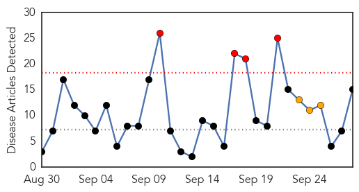
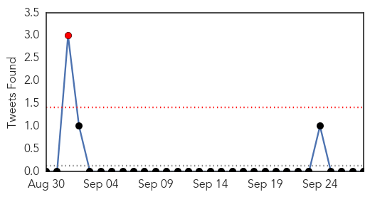

Dengue Fever
30-Day Web Trend
15 alerts, 4 warnings

30-Day Twitter Trend
0 alerts, 0 warnings

Article Locations

Article Confidences

Top Articles:
- 0.997
- Dengue Fever Hits 39,000 in Viet Nam
- 0.985
- No let up in dengue and H1N1 cases in Bhopal
- 0.982
- Results for potential mosquito-borne virus expected Friday
- 0.976
- Hong Kong officials provide update on dengue fever
- 0.975
- Figure out this dengue math
- 0.972
- Another 152 tested positive during Eid holidays taking tally to 773
- 0.962
- Dengue scare not over, but situation under control: Delhi govt
- 0.944
- Dengue scare not over, but situation under control: Delhi govt
- 0.937
- Tainan dengue cases soar, typhoon poses problem
- 0.918
- All doctors in dengue ward, others suffer : India, News
- 0.905
- DOH deploys dengue express lanes
- 0.898
- Higher than last year’s: Cebu City with most dengue cases in Central Visayas
- 0.889
- Dengue menace: CGHS open for non-beneficiaries too
- 0.859
- Dengue claims its ‘first victim’ in Rawalpindi
- 0.812
- Numbers swell at dengue ward
- 0.787
- Can America cope with a resurgence of tropical disease?
- 0.734
- Dengue surveillance monitored
- 0.643
- 87 cases dengue cases reported in B'luru Urban dist
- 0.562
- Red Cross and Red Crescent relief aid in Yemen
- 0.523
- The U.S. and Mexico: Addressing a shared legacy of neglected tropical diseases and poverty
Top Tweets:
- 0.527
- Flavivirus news: A year later, no lessons learnt: Dengue, Swine Flu hurt India again - Business... http://t.co/vTp0s6jjQF pathogenposse
Influenza
30-Day Web Trend
4 alerts, 3 warnings

30-Day Twitter Trend
1 alerts, 0 warnings

Article Locations

Article Confidences

Top Articles:
- 0.999
- Health officials urge public to get vaccinated - Alliance Review
- 0.996
- West Kentucky Star
- 0.983
- Milford Flu Clinic to be Held on Wednesday, Sept. 30
- 0.983
- Pro Vaccine Doctor Explains how Mandatory Flu Vaccines for Healthcare Workers Violates HIPAA Law
- 0.973
- Understanding The Seriousness Of The Flu ……
- 0.960
- Sept. 28 news: Mandatory flu immunization, polio-epidemic in Nigeria, mental health care fights disease
- 0.888
- Times Of Oman :: Oman's Ministry of Health advises post-Haj health precautions
- 0.837
- Bassetlaw: Hospitals are detemined to give the winter flu vaccine to as many staff members as possible
- 0.788
- Protect backyard flocks from avian flu
- 0.751
- September 27, 2015 Archives
- 0.632
- EpiVax Says H7N9 Influenza Vaccine Failure due to “Stealth Pathogen”
- 0.593
- Flu Shot Clinic Time Again
- 0.585
- Lessons learned from the recent US HPAI epornitic
- 0.553
- Flu infection reveals many paths to immune response
- 0.532
- LISD offering free flu vaccines for students
Top Tweets:
-
No tweets found for Sep 28, 2015